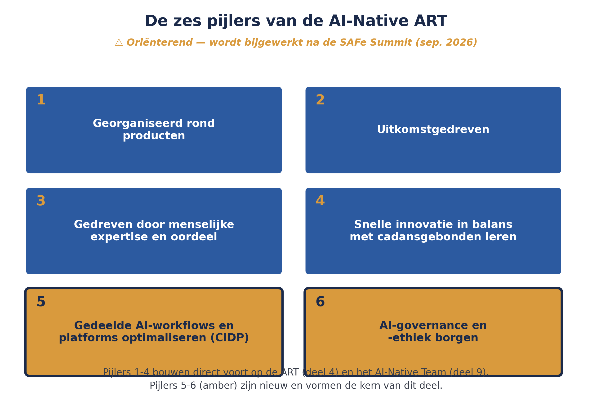
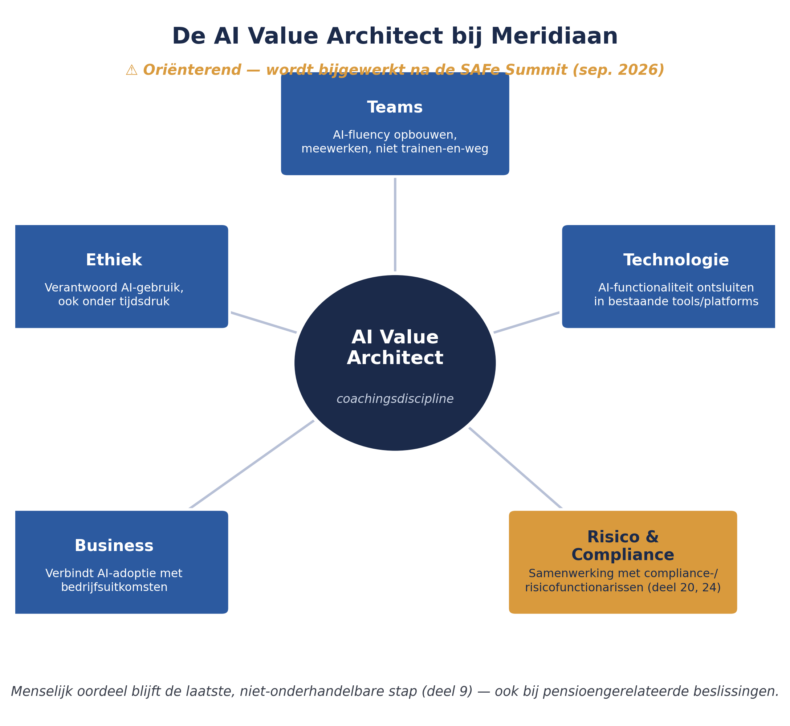

Deel 9 introduceerde het AI-Native Team op teamniveau. Dit deel tilt dat perspectief op naar de Agile Release Train en het portfolio: de zes pijlers van de AI-Native ART, de gedeelde AI-infrastructuur (CIDP), de guardrails en de nieuwe rol van AI Value Architect — en wat dit voor Meridiaan betekent nu de Solution Train Mutatieplatform AI wil inzetten onder toezicht van DNB en AFM.
6secties
±1,5uleestijd + werkboek
9controlevragen
6pijlers AI-Native ART
Positionering. Deze cursus is een voorbereiding op de certificeringen Release Train Engineer (RTE) en Lean Portfolio Management (LPM) van Scaled Agile, en uitdrukkelijk geen vervanging van het officiële SAFe-curriculum — dat wordt uitsluitend aangeboden via geautoriseerde Scaled Agile Partners. Voor terminologie en structuur volgen wij SAFe 6.0, de actuele versie van het Core-raamwerk.
Niveau 2: 11 Van ART naar Solution Train → 12 RTE-zwaartepunt I → 13 RTE-zwaartepunt II → 14 Agile Product Management → 15 Continuous Delivery Pipeline → 16 Architectural runway → 17 LPM I: strategie & budgets → 18 LPM II: portfolio kanban → 19 Meten: flow metrics & OKR's → 20 Governance & compliance → 21 AI-Native II (hier) → 22 Examentraining + capstone
01
Van team naar ART: zes pijlers
⏱ 16 min
Let op: dit deel wordt bijgewerkt na de SAFe Summit
Net als deel 9 (AI-Native I) staat dit deel apart van de rest van niveau 2. De inhoud is gebaseerd op de stand van de AI-Native SAFe-webinarreeks medio augustus 2026 en wordt bijgewerkt zodra Scaled Agile na de SAFe Summit van september 2026 het volledige beeld gefaseerd heeft onthuld. Dit is geen examenstof voor RTE of LPM — beide certificeringen blijven getoetst op Core SAFe 6.0.
Deel 9 introduceerde het AI-Native Team op teamniveau. In een AI-Native context blijft de ART — net als in Core SAFe (deel 4) — het niveau waarop teams samenkomen om systeemoverstijgende kansen te benutten die geen enkel team alleen kan aanpakken. Scaled Agile beschrijft de ART in een AI-Native context aan de hand van zes pijlers:
Georganiseerd rond producten — een ART is opgebouwd rond één operationeel product of een groep verwante, klantgerichte producten.
Uitkomstgedreven — productontwikkeling wordt gemeten aan de hand van behaalde klant- en bedrijfsuitkomsten, niet aan het volume van output.
Gedreven door menselijke expertise en oordeel — AI voedt de uitvoering, maar mensen brengen de product- en domeinexpertise in en blijven verantwoordelijk voor alle sleutelbeslissingen.
Snelle innovatie in balans met cadansgebonden leren — wanneer teams sneller werken dan ooit, kunnen lokale beslissingen en afhankelijkheden zich snel opstapelen; de ART-cadans houdt het leren gelijk getrokken zodat het product in een samenhangende richting blijft bewegen.
Gedeelde AI-workflows en platforms optimaliseren — zie sectie 2.
AI-governance en -ethiek borgen — zie sectie 3.
De eerste vier pijlers herken je grotendeels terug uit wat je al kent over de ART (deel 4) en het AI-Native Team (deel 9), nu geherformuleerd voor een context waarin AI een structurele rol speelt. De laatste twee pijlers zijn nieuw, en vormen de kern van dit deel.

Figuur 21-1 — de zes pijlers van de AI-Native ART, met de laatste twee uitgelicht
Controlevragen
Uit Werkboek deel 21, Opdracht 21.1 — de zes pijlers herkennen
1Een team meet zijn succes aan het aantal werkgevers dat een mutatie zonder fouten kan afronden, niet aan het aantal opgeleverde features. Welke pijler is dit?Toon antwoord
Pijler 2 — Uitkomstgedreven. Succes wordt hier gemeten aan een behaalde klantuitkomst (foutloze mutatie), niet aan output-volume.
2Een gedeeld platform zorgt dat alle vier de ARTs op dezelfde, geverifieerde manier AI gebruiken voor het genereren van testcases. Welke pijler is dit?Toon antwoord
Pijler 5 — Gedeelde AI-workflows en platforms optimaliseren. Teams hoeven zo niet elk apart hetzelfde lokale probleem op te lossen.
3Een AI-gegenereerd voorstel voor een nieuwe validatieregel wordt pas geïmplementeerd nadat een domeinexpert het heeft goedgekeurd. Welke pijler is dit?Toon antwoord
Pijler 3 — Gedreven door menselijke expertise en oordeel. AI voedt de uitvoering, maar de sleutelbeslissing blijft bij de mens.
4Een team dat sneller dan ooit experimenteert, wordt tijdens de ART Sync (deel 12) bijgepraat zodat het niet losraakt van de andere teams. Welke pijler is dit?Toon antwoord
Pijler 4 — Snelle innovatie in balans met cadansgebonden leren. De ART-cadans trekt het leren gelijk zodat lokale snelheid niet tot afwijkende richtingen leidt.
02
Gedeelde AI-workflows: de CIDP
⏱ 10 min
De ART implementeert gevalideerde, systeembrede verbeteringen in de Continuous Innovation and Delivery Pipeline (CIDP) — de AI-Native tegenhanger van de Continuous Delivery Pipeline uit deel 15. Het doel is gedeelde infrastructuur te leveren, zodat teams niet steeds opnieuw dezelfde lokale problemen hoeven op te lossen.
Voor een Solution Train zoals het Mutatieplatform (deel 11) zou dit bijvoorbeeld een gedeeld platform kunnen zijn waarmee alle ARTs op eenzelfde, geverifieerde manier AI inzetten voor het genereren van validatielogica — vergelijkbaar met hoe het gedeelde authenticatieplatform (deel 13, deel 16) nu al als architecturale runway-voorziening dient.
Controlevraag
Uit Werkboek deel 21, Opdracht 21.2 — CIDP versus CDP
1Wat is het verschil tussen de Continuous Delivery Pipeline (deel 15) en de Continuous Innovation and Delivery Pipeline (dit deel)? Wat blijft hetzelfde, en wat is nieuw?Toon antwoord
Wat hetzelfde blijft: het doel van een gedeelde, betrouwbare pipeline waarop teams kunnen vertrouwen in plaats van elk hun eigen lokale infrastructuur te bouwen. Wat nieuw is: de CIDP levert specifiek gedeelde AI-workflows en -platforms — bijvoorbeeld een geverifieerde, gedeelde manier om AI in te zetten voor het genereren van validatielogica — zodat elke ART binnen een Solution Train niet los van elkaar hetzelfde probleem oplost.
03
AI-governance en de AI Value Architect
⏱ 16 min
De ART biedt guardrails die ervoor zorgen dat AI veilig, ethisch en effectief wordt gebruikt — een directe uitbreiding van het concept guardrails dat je in deel 17 al kende van Lean Budget Guardrails, nu toegepast op AI-gebruik in plaats van op investeringen. Dit is geen aparte controlelaag die achteraf wordt toegevoegd, maar — in lijn met de Continuous Compliance-gedachte uit deel 20 — een ingebouwd onderdeel van hoe de ART werkt.
Om organisaties te helpen daadwerkelijk waarde uit AI te halen, introduceert de webinarreeks een nieuwe rol: de AI Value Architect. Deze rol benadert AI-adoptie als een coachingsdiscipline, niet als een trainingsactiviteit: AI Value Architects bouwen zowel hun eigen vaardigheid als die van de teams die ze ondersteunen, ontsluiten de waarde van AI-functionaliteit die al in bestaande tools en platforms aanwezig is, en overbruggen business en technologie — met nadrukkelijke aandacht voor risico, juridische aspecten, data en ethiek.
Controlevragen
Uit Werkboek deel 21, Opdracht 21.3 en 21.4
1Waarom wordt de AI Value Architect-rol omschreven als een coachingsdiscipline en niet als een trainingsactiviteit? Wat zou het verschil in de praktijk betekenen?Toon antwoord
Een trainingsactiviteit is eenmalig en eenzijdig: kennis overdragen en klaar. Een coachingsdiscipline is doorlopend en wederkerig: de AI Value Architect bouwt zelf ook aan zijn vaardigheid, blijft betrokken bij hoe teams AI daadwerkelijk gebruiken, en helpt de al aanwezige AI-functionaliteit in bestaande tools te ontsluiten in plaats van eenmalig kennis te "zenden". In de praktijk betekent dit een terugkerende, nabije samenwerking met teams in plaats van een losstaande workshop.
2Een team binnen de Solution Train Mutatieplatform wil AI inzetten om automatisch conceptantwoorden te genereren op vragen van werkgevers over hun pensioenregeling. Welke guardrail(s) zou je hiervoor inrichten, hoe valt dit samen met Continuous Compliance (deel 20), en wie zou hierbij betrokken moeten zijn?Toon antwoord
De guardrail volgt direct uit pijler 6 (AI-governance en -ethiek) en pijler 3 (menselijke expertise en oordeel): AI-gegenereerde conceptantwoorden mogen nooit ongezien naar een werkgever gaan bij pensioengerelateerde inhoud — een domeinexpert moet ze beoordelen voordat ze worden verstuurd, en het proces moet auditeerbaar zijn. Dit valt samen met Continuous Compliance (deel 20) doordat die beoordeling en logging in het proces zelf zijn ingebouwd, niet als losse controle achteraf. Betrokken zouden minimaal moeten zijn: het team zelf, een AI Value Architect, en de compliance-/risicofunctionarissen die ook in deel 24 terugkomen als de groep die de DNB/AFM-relatie beheert.
04
Blik vooruit: portfolioniveau
⏱ 8 min
Ter oriëntatie — dit onderwerp wordt in deel 29 (AI-Native III) verder uitgewerkt: op portfolioniveau beschrijft de webinarreeks een verschuiving naar een uitkomstboom (outcome tree), die output aan gedeelde OKR's koppelt van portfolioniveau tot en met individuele teams. Dit sluit aan bij wat je in deel 19 al leerde over OKR's die Strategic Themes verbinden met concrete Key Results — in een AI-Native context wordt die keten explicieter gemaakt en directer gemeten, mede omdat AI-ondersteunde analyse sneller inzicht kan geven in welke uitkomsten daadwerkelijk worden gerealiseerd.
Controlevraag
Uit Werkboek deel 21, Zelftoets, vraag 4
1Wat is een uitkomstboom (outcome tree), en waar wordt dit verder uitgewerkt?Toon antwoord
Een uitkomstboom koppelt output aan gedeelde OKR's, van portfolioniveau tot en met individuele teams — een explicietere en directer gemeten uitwerking van de OKR-keten die je in deel 19 al leerde. Dit wordt verder uitgewerkt in deel 29 (AI-Native III).
05
Terug naar Meridiaan
⏱ 12 min
Voor Meridiaan is de combinatie van agentic AI en toezicht door DNB/AFM een onderwerp dat zorgvuldigheid vraagt. De zesde pijler — AI-governance en -ethiek — sluit direct aan bij wat je in deel 20 hebt geleerd over Continuous Compliance: als een ART binnen de Solution Train Mutatieplatform AI inzet om bijvoorbeeld validatielogica te genereren voor pensioengerelateerde mutaties, moeten de guardrails uit deze pijler samenvallen met de compliance-enablers en automatische audit-logging die al onderdeel zijn van hoe Meridiaan werkt.
Het principe uit deel 9 blijft hierbij leidend: menselijk oordeel is de laatste, niet-onderhandelbare stap bij beslissingen die de waarde, veiligheid of het pensioen van een deelnemer raken — een AI Value Architect zou bij Meridiaan dan ook nauw moeten samenwerken met de compliance- en risicofunctionarissen uit deel 24, niet los daarvan opereren.

Figuur 21-2 — de AI Value Architect-rol tussen teams, business, en risico/compliance bij Meridiaan
Controlevraag
Uit Werkboek deel 21, Zelftoets, vraag 5
1Waarom is dit deel nadrukkelijk gemarkeerd als "wordt bijgewerkt na de Summit" en geen examenstof voor RTE/LPM?Toon antwoord
Omdat AI-Native SAFe op het moment van schrijven (medio augustus 2026) nog gefaseerd wordt onthuld door Scaled Agile, met het volledige beeld pas na de SAFe Summit van september 2026 — en omdat de exameneisen van RTE en LPM op Core SAFe 6.0 blijven staan. Zolang het model nog niet is uitgekristalliseerd, zou het als examenstof aanmerken de cursus onnodig instabiel maken.
06
Kernbegrippen uit dit deel
⏱ 6 min
Zes pijlers van de AI-Native ART — georganiseerd rond producten, uitkomstgedreven, gedreven door menselijke expertise, snelle innovatie in balans met cadansgebonden leren, gedeelde AI-workflows optimaliseren, AI-governance en -ethiek borgen.
Continuous Innovation and Delivery Pipeline (CIDP) — de AI-Native tegenhanger van de Continuous Delivery Pipeline (deel 15), gedeeld over teams binnen een ART.
AI Value Architect — een nieuwe, coachende rol die AI-adoptie begeleidt en business, technologie, risico en ethiek met elkaar verbindt.
Uitkomstboom (outcome tree) — de koppeling van OKR's van portfolio- tot teamniveau (nog in ontwikkeling, verder uitgewerkt in deel 29).
Verder naar deel 22
Deel 22 sluit niveau 2 af met examentraining voor RTE en LPM, en de capstone: een portfolio-review voor Meridiaan.